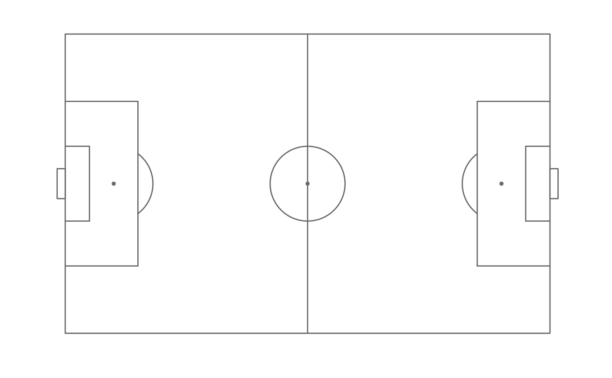

The coordinate system used to generate pitch markings in
can be customised by supplying a pitch specification to the dimensions
argument of annotate_pitch.
ggsoccer provides pitch specifications for a few popular data providers by default. However, user-defined specifications can also be used.
pitch_opta
pitch_statsperform
pitch_statsbomb
pitch_wyscout
pitch_international
pitch_tracabAn object of class list of length 10.
An object of class list of length 10.
An object of class list of length 10.
An object of class list of length 10.
An object of class list of length 10.
An object of class list of length 10.
A "pitch specification" is simply a list of dimensions that define a coordinate system. The required dimensions are:
"length"The length of the pitch from one goal to the other (x axis)
"width"The width of the pitch from touchline to the other (y axis)
"penalty_box_length"The distance from the goalline to the edge of the penalty area
"penalty_box_width"The width of the penalty area
"six_yard_box_length"The distance from the goalline to the edge of the six-yard box
"six_yard_box_width"The width of the six-yard box
"penalty_spot_distance"The distance from the goalline to the penalty spot
"goal_width"The distance from one goal post to the other
"origin_x"The minimum x coordinate of the pitch
"origin_y"The minimum y coordinate of the pitch
The following pitch dimensions are provided
"pitch_opta"For Opta f24 data
"pitch_statsbomb"For Statsbomb data
"pitch_wyscout"For Wyscout data
"pitch_international"As per UEFA Category 4 stadium regulations
"pitch_tracab""For ChyronHego Tracab, using the 105m x 68m default size"
make_pitch_tracab
library(ggplot2)
library(ggsoccer)
ggplot() +
annotate_pitch(dimensions = pitch_statsbomb) +
theme_pitch()
